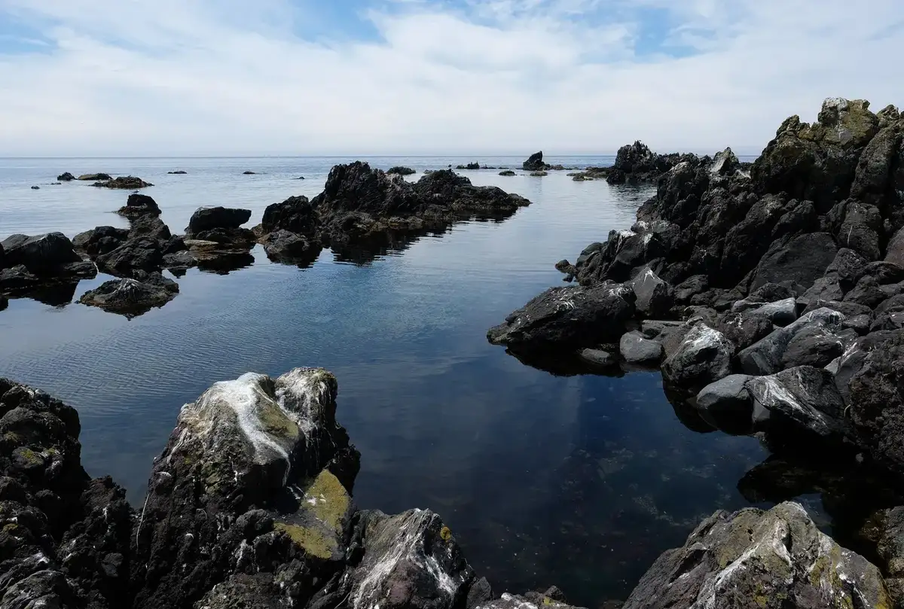
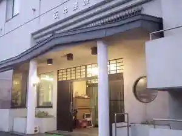
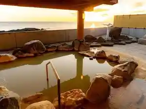
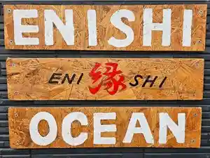
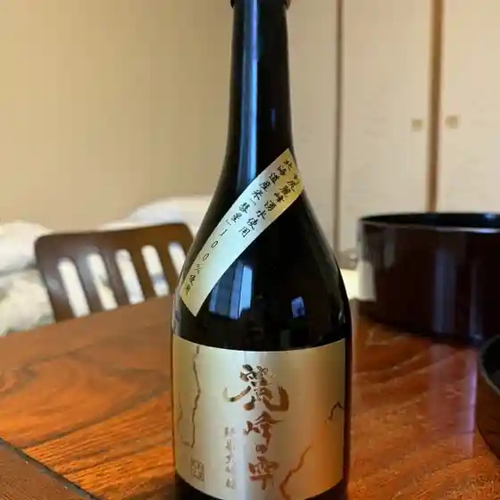
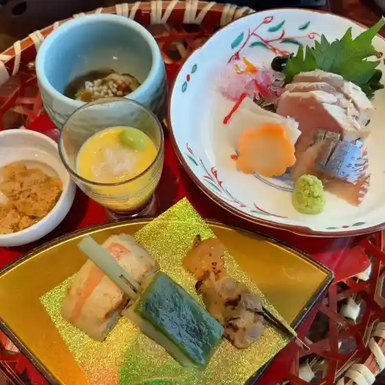
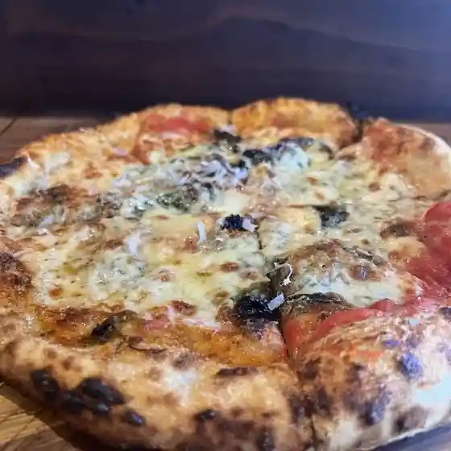
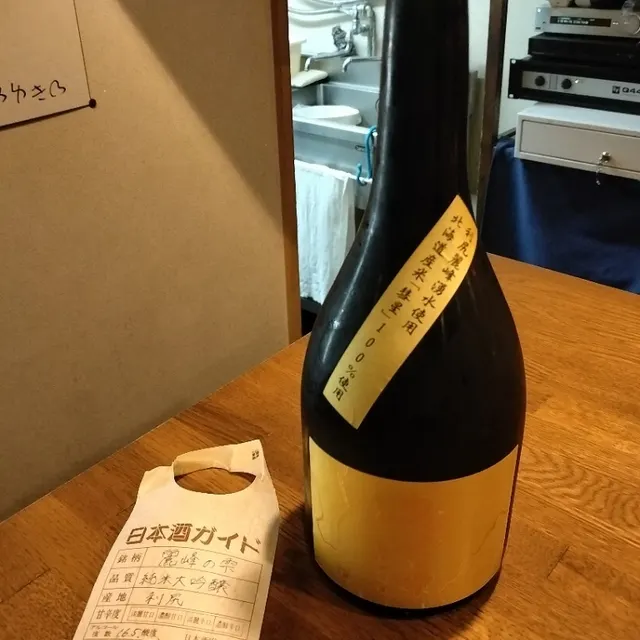
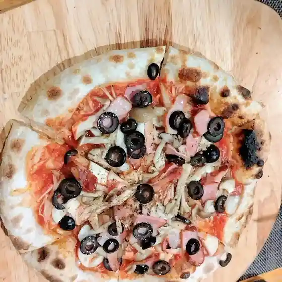

Rishiri
Rishiri · Hokkaido
Rishiri
Highlighted on the Hokkaido map.

Stay
しまのやど りしりくる
Shimanoyado Rishirikuru
中原旅館

Nakahara Ryokan
ホテル利尻

Hoteru Rishiri
縁 OCEAN

Heri Ocean
Dining
津田商店

Tsuda Shouten
ホテル利尻

Hoteru Rishiri
ほろ酔

Horo Sui
GOLLEY’S

Golley ’ S
なぎさ
Nagisa
利尻観光商事

Rishiri Kankou Shouji
銘酒BAR Tecchi

Meishu Bar Tecchi
トラットリア琉

Torattoria Ryuu
かもめ
Kamome
なごり荘
Nagori Sou
肉の燦燦
Niku No San San
びやころ荘
Biyakoro Sou
利尻ふる里食堂
Rishiri Furu Sato Shokudou
クツカンタ
Kutsukanta
常寿司
Jouju Tsukasa
くつがた荘
Kutsugata Sou
北利ん道
Kita Ri N Michi
Villa Kamui
Villa Kamui
CHICO GARAGE
Chico Garage
炙BAR1721
Sha Bar1721
ホテル アイランド･イン･リシリ
Hoteru Airando Airando In In Rishiri
ミルピス商店
Mirupisu Shouten
畑宮食品
Hatake Miya Shokuhin
御崎物産
Misaki Bussan